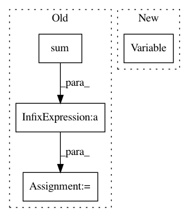

614c41e7f05d274991d95271c49a87af3fa2cf49,onmt/Loss.py,NMTLossCompute,compute_loss,#NMTLossCompute#Any#Any#Any#,150
Before Change
1 - self.label_smoothing)
target_.masked_fill_(mask, 0)
target_feed = target_
norm_ = self.normalizing * target.data.ne(self.padding_idx).sum()
loss = self.criterion(scores, target_feed)
loss_data = loss.data.clone() + norm_
After Change
if mask.dim() > 0:
likelihood.index_fill_(0, mask, 0)
tmp_.index_fill_(0, mask, 0)
gtruth = Variable(tmp_, requires_grad=False)
loss = self.criterion(scores, gtruth)
if self.confidence < 1:
loss_data = - likelihood.sum(0)
In pattern: SUPERPATTERN
Frequency: 3
Non-data size: 4
Instances
Project Name: OpenNMT/OpenNMT-py
Commit Name: 614c41e7f05d274991d95271c49a87af3fa2cf49
Time: 2017-12-22
Author: skywalker@postech.edu
File Name: onmt/Loss.py
Class Name: NMTLossCompute
Method Name: compute_loss
Project Name: facebookresearch/Horizon
Commit Name: d9815f5ee75397f9f75da34e28e7292b98c181d5
Time: 2018-04-12
Author: edoardoc@fb.com
File Name: ml/rl/training/ddpg_trainer.py
Class Name: DDPGTrainer
Method Name: train
Project Name: jwyang/faster-rcnn.pytorch
Commit Name: 19a0714f068d2167683639e174da172a5389ee2d
Time: 2018-01-15
Author: jyang375@hal.cc.gatech.edu
File Name: lib/model/faster_rcnn/faster_rcnn_cascade.py
Class Name: _fasterRCNN
Method Name: forward